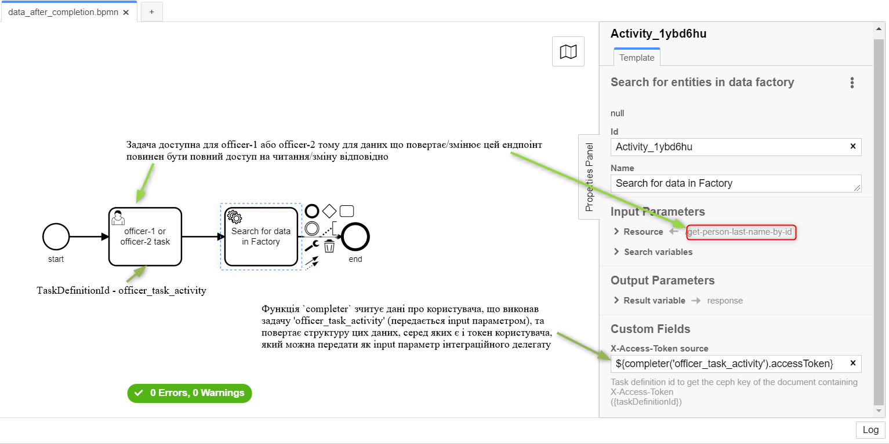
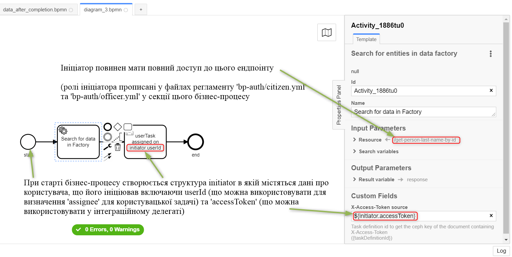
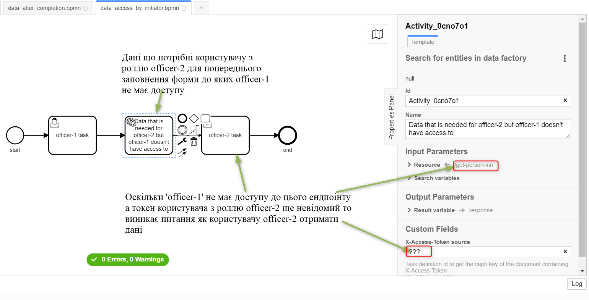
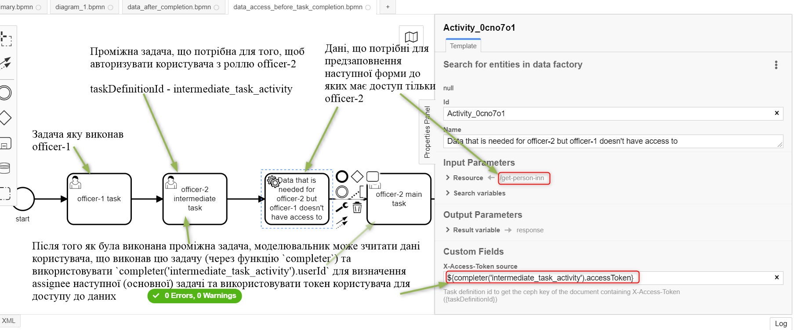

Business process modeling and access control (RBAC)
| 🌐 This document is available in both English and Ukrainian. Use the language toggle in the top right corner to switch between versions. |
| Role Based Access Control (RBAC) is the development of selective access control policy. The access rights of the system users to its services depend on their particular application, forming the roles. |
1. Configuring roles and access rights
Before modeling business processes, it is necessary first to identify the available roles in the simulated registry and define them in the registry’s Gerrit repository:
-
roles/officer.yml: for definition of the officer roles. -
roles/citizen.yml: for definition of the citizen roles.
Upon identification and definition of all the roles in the appropriate files, it is necessary to grant access rights and describe them in the defined files:
-
bp-auth/officer.yml: for granting rights to access business processes for officers; -
bp-auth/citizen.yml: for granting rights to access business processes for citizens; -
data-model/role_permission.xml: for granting access rights at the level of the data model.
After granting roles and access rights, you can proceed directly to business process modeling.
1.1. Defining the roles of officials and citizens
In order to define the roles of officers/citizens, it is necessary to describe them in the corresponding files (roles/officer.yml, roles/citizen.yml), which are represented as a list of roles in the following format:
roles:
- name: officer-1
description: 'Officer first role'
- name: officer-2
description: 'Officer second role'| The names of roles must be written in Latin and only in the lower case. |
1.2. Granting access rights at the level of business processes
For granting access rights at the level of business processes, it is necessary to describe them in the appropriate files (bp-auth/officer.yml, bp-auth/citizen.yml) in the following format:
authorization:
realm: 'officer'
process_definitions:
- process_definition_id: first-business-process
process_name: "First process name"
process_description: 'First process description'
roles:
- officer-1
- process_definition_id: second-business-process
process_name: "Second process name"
process_description: 'Second process description'
roles:
- officer-1
- officer-2
Names of roles, realm and process_definition_id must be specified in Latin letters.
|
In this way, three authorizations will be generated in Camunda:
-
READ,CREATE_INSTANCEfor theofficer-1role/group of thefirst-business-processprocess. -
READ,CREATE_INSTANCEfor theofficer-1role/group of thesecond-business-processprocess. -
READ,CREATE_INSTANCEfor theofficer-2role/group of thesecond-business-processprocess.
In the example above, the officer-1 role has access to start both processes, and officer-2 only has access to the second one.
1.3. Granting access rights at the level of the data model (XML template)
<changeSet id="roles" author="registry owner">
<comment>SET PERMISSIONS</comment>
<ext:rbac>
<ext:role name="isAuthenticated">
<ext:table name="person">
<ext:column name="first_name" read="true"/>
<ext:column name="last_name" read="true"/>
</ext:table>
</ext:role>
<ext:role name="officer" realm="officer_realm">
<ext:table name="person">
<ext:column name="first_name" read="true" update="true"/>
<ext:column name="last_name" read="true" update="true"/>
<ext:column name="passport" read="true"/>
</ext:table>
</ext:role>
<ext:role name="officer_realm.passport_officer">
<ext:table name="person">
<ext:column name="passport" update="true"/>
</ext:table>
</ext:role>
<ext:role name="inn_officer" realm="officer_realm">
<ext:table name="person">
<ext:column name="inn" update="true"/>
</ext:table>
</ext:role>
<ext:role name="officer_realm.birth_officer">
<ext:table name="person" insert="true"/>
</ext:role>
<ext:role name="death_officer" realm="officer_realm">
<ext:table name="person" delete="true"/>
</ext:role>
</ext:rbac>
</changeSet>2. Modeling of business processes
2.1. Granting access rights to implement business process tasks
Camunda has the capability to grant access rights for individual tasks. To do this, you need to choose one of the available element templates (element-templates) in the Camunda Modeler application:

-
Citizen Sign Task: It is used to define a task that requires a signature (QES) of a citizen. This task can be accessible only to a business process initiator.
-
Officer Sign Task: It is used to define a task that requires a signature of an officer.
-
User form: This is used to define a task that does not require a signature (QES).
When a task requiring an official signature or a regular task is selected, the template has three fields for granting access rights to the task:
-
Assignee: This can be${initiator}, (to assign the task immediately to the user who initiated the business process) or user ID (to assign the task to one clearly defined user).
The user ID is the preferred_username set in Keycloak.
|
|
If `Assignee' is defined, the following fields are ignored. To use
|

-
Candidate users: A comma separated list of users having access to complete a task. As a part of the business process, each user can assign this task to himself/herself and complete it. -
Candidate roles: A list of comma separated roles having access to complete a task. As a part of the business process, each user having at least one of these roles can assign this task to himself/herself and complete it, even if he/she does not have access to the business process.
For example, the business process bp1 can be initiated only by a user with the officer-bp1 role, although the task within this business process — that is available to the officer-task role — can be completed only by a user with the regulatory role officer-task).
|
Candidate users and Candidate roles interact in pairs, because authorization in Camunda is only created for them.
|
2.2. Correspondence between user accesses to the business process/tasks and to the physical data model of the factory
Since requests to the data platform (factory) are sent on behalf of a user, you must be careful when modeling such a request, because the user must have access to the requested data.
In the Camunda modeler, the token transfer looks like this:

The source of a token for delegation connectors to the factory is the Ceph document of a single completed user task.
That is, the user whose task is used as a token source must have a role with configured access to the requested resource (see Resource : registration in the screenshot above).
| To make sure that a user completing a task has access to data, the process must be modeled to use the same role for the data model and the task. |
-
The
Activity_shared-sign-app-includetask definesCandidate Rolesasofficer-sign-app,officer-sing-app2. The token from this task is used to createregistrationin the data factory.
In this case, both officer-sign-app and officer-sing-app2 roles must have access to create the registration resource.
-
The
Activity_shared-sign-app-includetask definesAssigneeas${initiator}(from the filesbp-auth/officer.ymlandbp-auth/citizen.yml, it is known that theofficer-1,officer-2andofficer-3roles can initiate the business process). The token from this task is used to create theregistrationresource in the data factory.
In this case, all roles with access to initiate this business process (officer-1, officer-2 and officer-3) must have access to create registration.
2.3. Examples of modelling from RBAC
|
Let’s assume that there is a The syntax is as follows:
The Let’s also assume that when the business process starts, an |



| In this case, it is necessary to simulate an intermediate task that provides an opportunity to read a token with the required level of access: |
